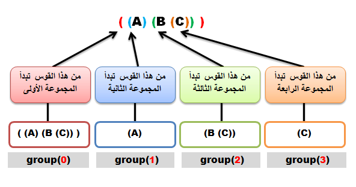
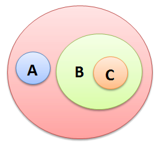

Javaالتعابير النمطية في جافا
مفهوم التعابير النمطية
تعابير نمطية: تعني Regular Expressions في البرمجة و تختصر بـ regex أو regexp, و هي عبارة عن نص له معنى محدد.
للدقة أكثر, كل حرف أو رمز نضعه في هذا النص يعني شيء معين.
الـ regex هم أحرف و رموز جاهزة تستخدم للبحث في النصوص بطريقة سهلة جداً, دون الحاجة لكتابة خوارزميات معقدة جداً.
خلاصة: نستخدم الـ regex لوضع شروط أثناء البحث في نص معين. و يمكن إستخدامهم في البحث, التعديل, أو لمعالجة النصوص و البيانات.
طريقة التعامل مع التعابير النمطية
لإنشاء regex و إستخدامه, إتبع الخطوات التالية:
قم بإنشاء نص يمثل الـ regex.
قم بترجمة هذا النص باستخدام الدالة compile(), ثم قم بتخزين النص المترجم في كائن نوعه Pattern.
قم باستدعاء الدالة matcher() من كائن الـ Pattern على أي نص تريد البحث فيه عن تطابق. ثم قم بتخزين النتيجة التي سترجعها الدالة في كائن نوعه Matcher.
لمعرفة إذا كان النص يحتوي على أحرف هي نفسها لأحرف المقصودة من الـ regex يمكنك إستدعاء الدالة matches() على كائن الـ Matcher و سترجع true في حال كان هناك تطابق.
مثال
import java.util.regex.Matcher;
import java.util.regex.Pattern;
public class Main {
public static void main(String[] args) {
// b و ينتهي بالحرف a و هو يعني نص يبدأ بالحرف a*b هنا هو النص regex الـ
// Pattern ثم قمنا بتخزينه في كائن نوعه compile() قمنا بتحويله باستخدام الدالة
Pattern p = Pattern.compile("a*b");
// Matcher ثم قمنا بتخزينه في كائن نوعه aaaaaaaab على النص matcher() قمنا باستدعاء الدالة
Matcher m = p.matcher("aaaaaaaab");
// regex لمعرفة إذا تم إيجاد نص يطابق الـ Matcher على كائن الـ matches() قمنا باستدعاء الدالة
System.out.println( "Result: " + m.matches() );
}
}
•سنحصل على النتيجة التالية عند التشغيل.
Result: true
الكلاسات التي تستخدم للتعامل مع التعابير النمطية
هناك إثنين كلاس يستخدمان للتعامل مع الـ regex و هما : Pattern - Matcher
الكلاس Pattern
هذا الكلاس يستخدم لتحويل كائن نوعه String ( عبارة عن regex ) إلى كائن نوعه Pattern.
إذاً كائن الـ Pattern يمثل الحرف أو الأحرف المقصودة من الـ regex.
هذا الكلاس لا يحتوي على كونستركتور.
لإنشاء Pattern, عليك استدعاء واحدة من دواله الثابتة و هي الدالة compile(), و تمرير regex لها كـ argument, و هكذا سترجع كائن نوعه Pattern يمثل regex يفهمها المترجم و جاهزة للإستخدام.
الكلاس Matcher
هذا الكلاس يستخدم لمقارنة الأحرف المقصودة من كائن الـ Pattern مع نص معين.
هذا الكلاس لا يحتوي على كونستركتور.
لإنشاء كائن من الكلاس Matcher, عليك استدعاء الدالة matcher(), على كائن من الكلاس Pattern و تمرير String لها كـ argument, هذه الـ String تمثل النص الذي سيتم البحث فيه عن أحرف تتطابق مع أحرف كائن الـ Pattern.
إذاً كائن الـ Matcher هو الذي ينفذ عمليات المقارنة بين الـ regex و النص.
الأحرف المستخدمة في التعابير النمطية
| Regex |
إستخدامه |
"" |
تعني نص عادي
مثال: "this is just a text".
معناه: إبحث عن نفس هذا النص. |
^ |
تعني بداية السطر |
$ |
تعني نهاية السطر |
. |
تعني أي حرف موجود ما عدا الحرف الذي يشير لسطر جديد.
ملاحظة: يمكن استخدام الحرف m حتى يتم تجاهل الذي يشير لسطر جديد. |
[...] |
تعني أي حرف من الأحرف الموجودة بين المربعين
مثال: "[abc]".
معناه: إبحث عن الحرف a أو b أو c. |
[^...] |
تعني أي حرف غير الأحرف الموجودة بين المربعين
مثال: "[^abc]".
معناه: إبحث عن أي حرف غير الأحرف a أو b أو c. |
\A |
تعني بداية النص |
\z |
تعني نهاية النص |
\Z |
تعني نهاية النص, و إذا كان النص يحتوي على أكثر من سطر, فإنها توقف عملية البحث عن تطابق في نهاية أول سطر. |
\b |
تعني مجموعة أحرف تمثل كلمة أو رقم لا يوجد بينها مسافة أو رمز, في حال لم يتم وضعها بين [ ] |
\B |
تعني ليس كلمة, أي حرف أو رقم واحد. و هي عكس الـ \b |
\w |
تعني مجموعة أحرف تمثل كلمة أو رقم لا يوجد بينها مسافة أو رمز. و هي نفسها [a-zA-Z_0-9] |
\W |
تعني ليس كلمة, أي حرف أو رقم واحد. و هي نفسها [^\W] |
\h |
تعني أن الحرف يمثل مسافة فارغة بشكل أفقي, أي مثل مسافة فارغة بين الكلمات. و هي نفسها [\t\xA0\u1680\u180e\u2000-\u200a\u202f\u205f\u3000] |
\H |
تعني أن الحرف ليس مسافة فارغة. و هي نفسها [^\h] |
\s |
تعني أن الحرف يمثل مسافة فارغة. و هي نفسها [\t\n\x0B\f\r] |
\S |
تعني أن الحرف ليس مسافة فارغة. و هي نفسها [^\S] |
\v |
تعني أن الحرف يمثل مسافة فارغة بشكل عامود, أي يجعل النص ينزل على سطر جديد. و هي نفسها [\n\x0B\f\r\x85\u2028\u2029] |
\V |
تعني أن الحرف لا يمثل مسافة فارغة بشكل عامود. و هي نفسها [^\v] |
\d |
تعني أي رقم. و هي نفسها [0-9] |
\D |
تعني ليس رقم. و هي نفسها [^0-9] |
\G |
تعني نهاية التطابق السابق |
\R |
تعني أي حرف يفصل سلسلة الأحرف عن بعضها. و هي نفسها [\u000D\u000A|[\u000A\u000B\u000C\u000D\u0085\u2028\u2029] |
\n |
تعني حرف يجعل النص ينزل على سطر جديد. و هي نفسها ('\u000A') |
\r |
تعني جعل النص يبدأ من بداية السطر. و هذا الحرف يمثل \r\n. و هي نفسها ('\u000D') |
* |
لتكرار الشيء الذي قبلها من صفر ( أي حتى لو لم يكن هناك شيء أصلاً ) إلى ما لا نهاية.
و هي تستخدم للبحث عن تطابق يبدأ بحرف معين و ينتهي بحرف معين دون الإهتمام إذا كان يحتوي على شيء بين هذين الحرفين أم لا. |
+ |
لتكرار الشيء الذي قبلها مرة أو أكثر |
? |
لتكرار الشيء مرة واحدة أو لا مرة. |
| |
تعني ( أو ) و هي تستخدم لوضع إحتمالات.
مثال: "a|b".
معناه: إبحث عن الحرف a أو b. |
() |
تعني مجموعة, و تستخدم لإنشاء regex ترجع محتوى النص المتطابق مع الـ Pattern الذي تم إيجاده كمجموعة |
{n,} |
لتكرار الشيء الذي قبلها بقيمة العدد الذي نضعه مكان الحرف n.
مثال: "\d{4}".
معناه: إبحث عن عدد يتألف من 4 أرقام. |
{n, m} |
لتكرار الشيء الذي قبلها بقيمة بقيمة محصورة بين m و n.
مثال: "\d{2,4}".
معناه: إبحث عن عدد يتألف من 2 إلى 4 أرقام كحد أقصى. |
إنتبه
الرمز \ يسمى backslash, و هو escape character أي حرف له معنى خاص في جافا.
يجب أن تضع \\ لتعريف \. فمثلاً لتعريف \w نكتب \\w.
في الـ regex يجب أن تضع \\\\ لتعريف \ يفهم على أنه escape character.
دوال الكلاس Matcher
الكلاس Matcher هو كلاس جاهز في جافا, يحتوي على دوال كثيرة للتعامل مع محتوى النصوص, سواء للبحث عن أحرف أو كلمات أو جمل, و تقسيمها ضمن مجموعات إلخ..
سنقسم دوال الكلاس Matcher إلى 3 فئات أساسية:
دوال تستخدم لمعرفة إذا تم إيجاد تطابق.
دوال تستخدم لمعرفة الـ index الذي تم فيه إيجاد تطابق.
دوال تستخدم للتبديل.
دوال تستخدم لمعرفة إذا تم إيجاد تطابق
| إسم الدالة مع تعريفها |
public boolean lookingAt()
ترجع true إذا تم إيجاد تطابق بين كائن الـ Pattern و النص الذي نريد البحث فيه.
هذه الدالة تتوقف مباشرةً عن البحث عندما تجد أول تطابق. |
public boolean find()
ترجع true إذا تم إيجاد أكثر من تطابق بين كائن الـ Pattern و النص الذي نريد البحث فيه.
هذه الدالة تبحث في النص كله من الحرف الأول إلى الحرف الأخير.
أي حتى لو تم إيجاد النص الذي تبحث عنه ستظل تحاول إيجاد تطابق حتى تمر على جميع أحرف النص. |
public boolean matches()
ترجع true إذا تطابقت جميع أحرف النص مع أحرف كائن الـ Pattern.
أي في حال كان الـ Pattern يطابق كل النص الذي نريد البحث فيه. |
وضعنا هنا أمثلة شاملة تعلمك استخدام الدوال المذكورة في الجدول.
شاهد الأمثلة »
إذاً إستخدم الدالة lookingAt() في حال كنت تريد معرفة إذا كان النص يحتوي على حرف, رقم, رمز, كلمة, جملة معينة مرة واحدة.
و استخدم الدالة find() في حال كنت تريد معرفة كم مرة في النص يوجد حرف, رقم, رمز, كلمة, جملة معينة, بالإضافة أنه يمكنك الإستفادة من الدوال start() و end() لمعرفة مكان إيجاد جميع التطابقات في النص.
و استخدم الدالة matches() في حال كنت تريد معرفة إذا كان النص يحتوي على نفس ما يحتويه الـ Pattern.
دوال تستخدم لمعرفة الـ index الذي تم فيه إيجاد تطابق
| إسم الدالة مع تعريفها |
public int start()
ترجع رقم الـ index للحرف الذي بدأ التطابق من عنده. |
public int end()
ترجع رقم الـ index للحرف الذي إنتهى التطابق عنده. |
وضعنا هنا مثال شامل يعلمك استخدام الدوال المذكورة في الجدول.
شاهد المثال »
دوال تستخدم للتبديل
| إسم الدالة مع تعريفها |
public String replaceAll(String replacement)
تقوم بتبديل كل محتوى موجود في النص يتطابق مع محتوى الـ Pattern بمحتوى جديد. |
public String replaceFirst(String replacement)
تقوم بتبديل أول محتوى موجود في النص يتطابق مع محتوى الـ Pattern بمحتوى جديد. |
وضعنا هنا أمثلة شاملة تعلمك استخدام الدوال المذكورة في الجدول.
شاهد الأمثلة »
الجدول التالي يحتوي على دالتين عليك إستدعائهما مع بعض لتنفيذ عملية التبديل.
| إسم الدالة مع تعريفها |
public Matcher appendReplacement(StringBuffer sb, String replacement)
هذه الدالة تبدأ عملية تبديل محتوى محدد في النص كلما وجدته بمحتوى جديد.
فهي تبدل المحتوى الذي تم إيجاده في النص بمحتوى جديد و ترجع النص كله مع التبديل ككائن نوعه StringBuffer.
كما أنها تعتمد على الدوال find() و start() و end() عندما تبحث عن المحتوى الذي سيتم تبديله.
و هي تستفيد من الدوال start() و end() لمعرفة أين يبدأ و أين ينتهي المحتوى الذي سيتم تبديله في النص.
الدالة find() نستخدمها للبحث عن كل تطابق موجود النص.
ملاحظة: الدالة appendReplacement() لا تضيف بقية النص الموجودة بعد آخر مرة تم فيها إيجاد تطابق. |
public StringBuffer appendTail(StringBuffer sb)
هذه الدالة تكمل عملية تبديل محتوى النص بمحتوى جديد.
هي تقوم فقط بإضافة النص العادي الموجود بعد آخر مرة تم فيها تبديل القيمة.
هذه الدالة تُستدعى بعد إستدعاء الدالة appendReplacement() بالترتيب حتى تضيف باقي المحتوى على الـ StringBuffer. |
وضعنا هنا مثال شامل يعلمك استخدام الدوال المذكورة في الجدول.
شاهد المثال »
تقسيم الـ regex إلى مجموعات
تقسيم regex إلى مجموعات هي طريقة لمعالجة عدة أحرف كمجموعة واحدة يتم إنشائهم من خلال وضع الأحرف التي نريد تجميعها بين عدة أقواس.
مثال: الـ regex "dog" هو مجموعة واحدة تتألف من الأحرف "g" , "o" , "d"
المجموعات الموجودة يتم ترقيمها من خلال حساب عدد الأقواس المفتوحة من اليسار إلى اليمين.
مثال: في الـ regex "((A)(B(C)))" يوجد أربع مجموعات كما في الصورة التالية:

في مادة الرياضيات يتم رسم هذه المجموعات كما في الصورة التالية:

لمعرفة عدد المجموعات الموجودة في الـ regex, قم باستدعاء الدالة groupCount() على كائن نوعه Matcher.
لاحظ أن group(0) يمثل كل الـ regex الموجود. لذلك الدالة groupCount() لا تضيف الـ group(0) على عدد المجموعات الذي ترجعه.
إذاً هنا إذا قمت بإستدعاء الدالة groupCount() سترجع 3.
مثال
import java.util.regex.Matcher;
import java.util.regex.Pattern;
public class Main {
public static void main(String[] args) {
String line = "This order was placed for QT3000! OK?";; // line: هو النص الذي سنبحث فيه
String REGEX = "(.*?)(\\d+)(.*)"; // REGEX: هو النص الذي سنبحث عنه و سيتم تقسيمه إلى 3 مجموعات
Pattern p = Pattern.compile(REGEX); // Pattern ثم قمنا بتخزينه في كائن نوعه compile() باستخدام الدالة Pattern إلى REGEX قمنا بتحويل الـ
Matcher m = p.matcher(line); // Matcher ثم قمنا بتخزينه في كائن نوعه INPUT على النص matcher() قمنا باستدعاء الدالة
if ( m.find() ) // سيبحث عن التطابق التالي INPUT موجود في الـ Pattern هنا طالما أن الـ
{
System.out.println( "group 0: " + m.group(0) ); // هنا قمنا بعرض محتوى المجموعة رقم 0 و التي تحتوي على جميع المجموعات
System.out.println( "group 1: " + m.group(1) ); // هنا قمنا بعرض محتوى المجموعة رقم 1
System.out.println( "group 2: " + m.group(2) ); // هنا قمنا بعرض محتوى المجموعة رقم 2
System.out.println( "group 3: " + m.group(3) ); // هنا قمنا بعرض محتوى المجموعة رقم 3
}
else
{
System.out.println( "NO MATCH" ); // سيطبع هذا النص في حال لم يجد أي تطابق
}
}
}
•سنحصل على النتيجة التالية عند التشغيل.
group 0: This order was placed for QT3000! OK?
group 1: This order was placed for QT
group 2: 3000
group 3: ! OK?


 محرر الويب
محرر الويب نظام الألوان
نظام الألوان محول الوحدات
محول الوحدات محلل عناوين الشبكات
محلل عناوين الشبكات